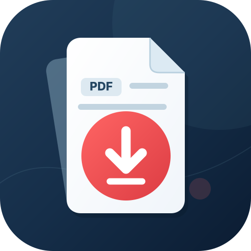

Download for Chromium
Download for Chromium
Native controls
Restores Calaméo’s own Download and Print buttons when they are disabled.
Free browser extension · GNU AGPL v3
Download complete Calaméo publications as PDF, directly from the reader. The extension restores the native Download and Print buttons when Calaméo disables them.

Made for the reader
One small extension that brings the complete document back within reach.
Restores Calaméo’s own Download and Print buttons when they are disabled.
Every page is prepared in the background and saved as one document from the reader.
Print the full document with the browser’s normal dialog, including with Ctrl+P.
LOCAL The PDF is assembled in your browser. No account or third-party converter is needed.
From pages to a file
The extension prepares the document while you read. Download it in one click, or use the print dialog when you need selected pages.
Three ways to get the PDF
For a complete publication, staying in the reader makes the difference.

All three approaches can print selected pages. This extension stands out when you want one complete PDF without leaving the Calaméo reader.
Available for Firefox 140 and later from Firefox Add-ons.
Open the Firefox listing →Chrome / Chromium 121+, Edge, and Brave (tested). Download the Chromium package from GitHub Releases, then load it as an unpacked extension.
Get the latest release →Pages are fetched from Calaméo’s image servers and assembled in your browser. The extension uses no account, analytics, tracking, or third-party converter. The signed page link is used for requests but not stored; prepared PDFs remain in the extension’s local storage for up to seven days.
Limits: The reader must have loaded at least one page and expose its total page count. Exports contain page images; OCR text, links, and interactive media are not added. Background preparation supports up to 500 pages. Direct printing supports up to 2,000 pages and 128 MiB; use Download for larger publications.
Open a publication at calameo.com/read/…, then use its Download button to save all pages. Use Print or Ctrl+P to open your browser’s print dialog. To keep selected pages, choose “Save as PDF” and enter a range such as 1-3, 8, 12-15.